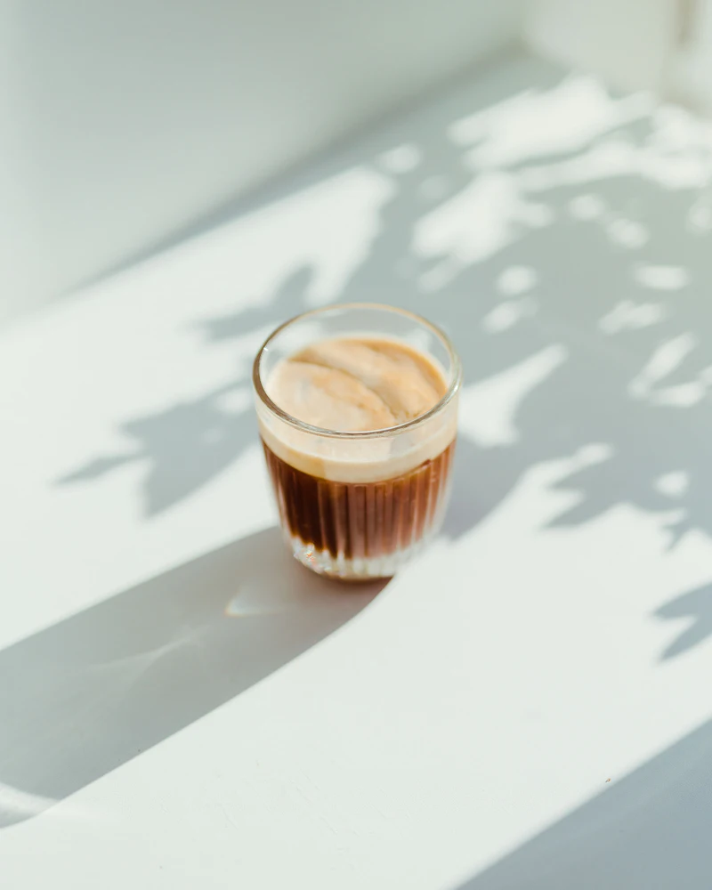
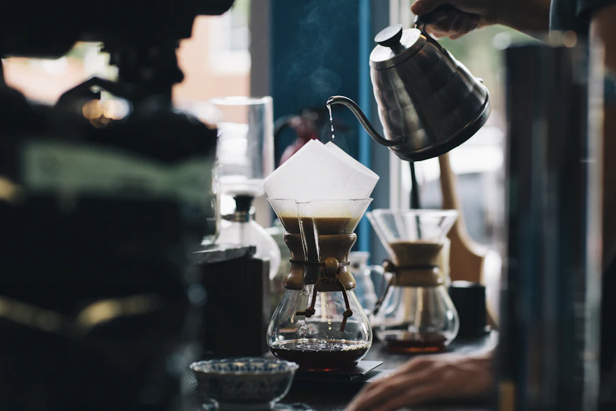
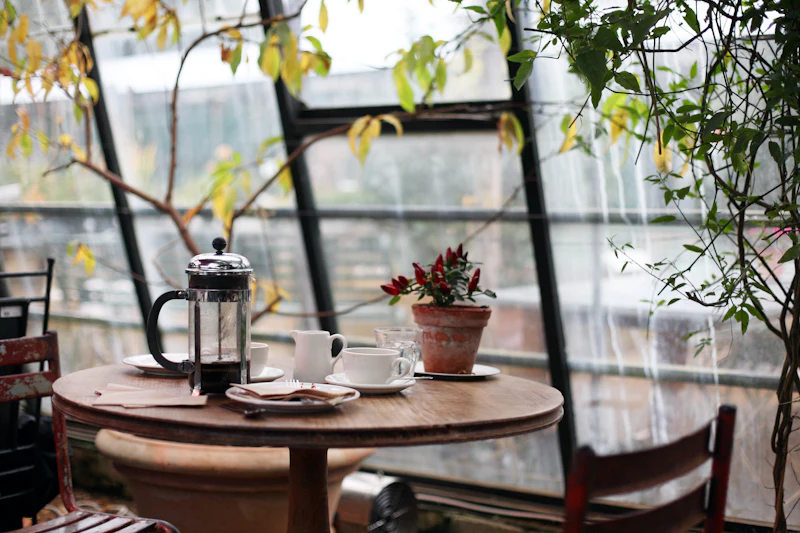
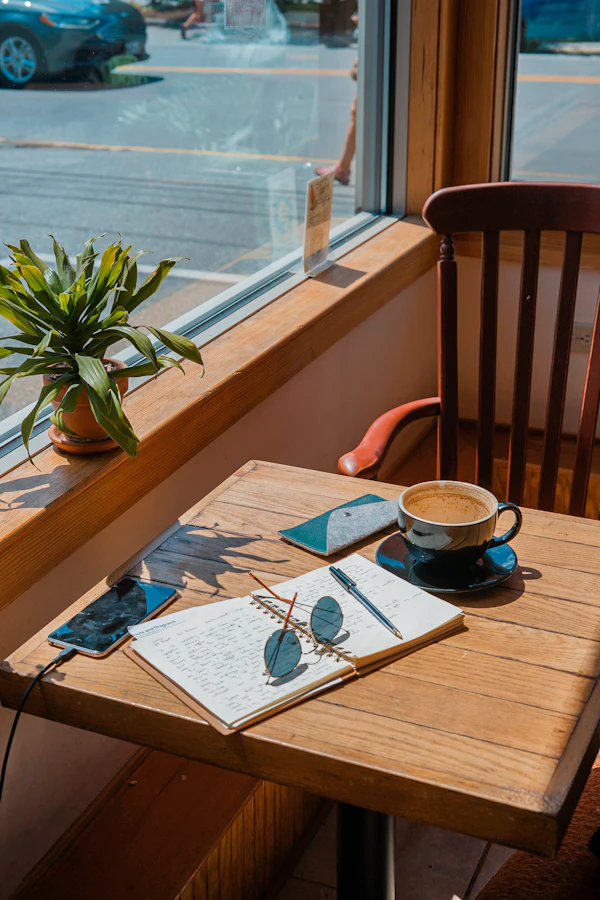
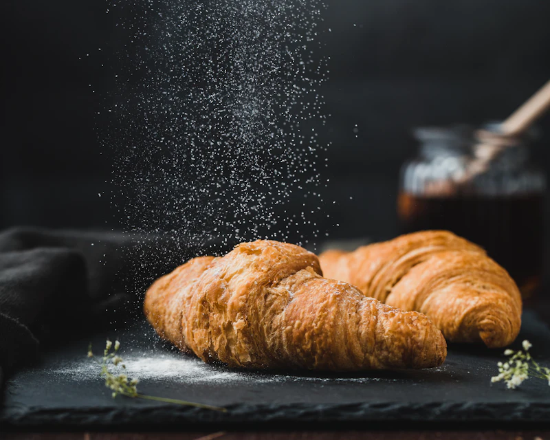
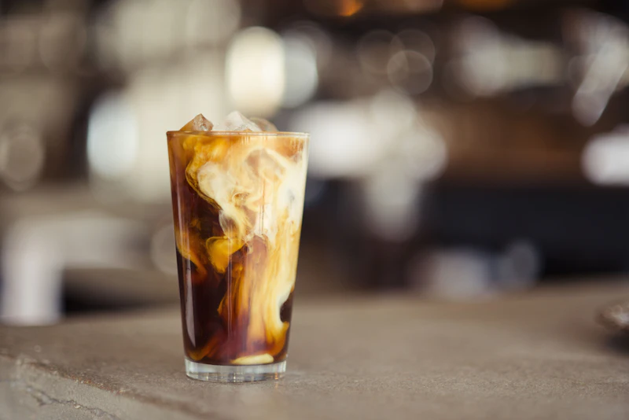
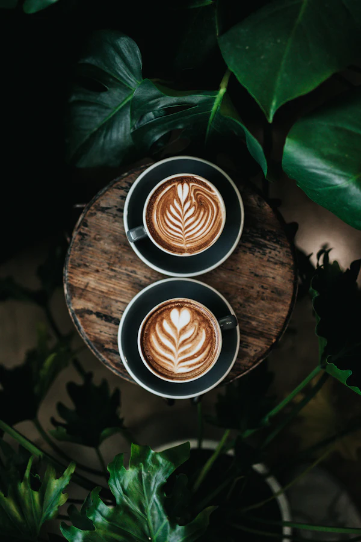
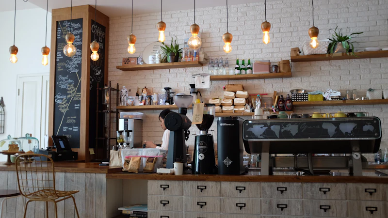

Specialty-кофе и выпечка · Кишинёв
Твой кофе. Твой момент.

Небольшая кофейня в центре города. Варим specialty-кофе, каждое утро печём круассаны и оставляем вам время — на чашку, разговор или страницу книги.
Ежедневно · 8:00–21:00
01 О нас
Место, куда хочется вернуться


Мы любим кофе, в котором слышно, откуда он родом: ягоды Эфиопии, шоколад Бразилии, мягкую сладость Колумбии.
Зерно берём у небольших обжарщиков и меняем сорта каждый сезон. Выпечку готовим сами, рано утром, поэтому к открытию в зале пахнет маслом и корицей. Здесь нет спешки: можно занять стол у окна на пару часов, и никто не посмотрит на часы.
- Зерно
- Свежая обжарка, новые лоты каждый сезон
- Выпечка
- Печём сами, каждое утро с шести
- Тишина
- Негромкая музыка, розетки у окна
03 Атмосфера
Свет из окна, тихие утра
Деревянные столы, много дневного света и запах свежей выпечки. Немного о том, как у нас всё устроено.






04 Контакты
Заходите на чашку
Адрес
ул. Примерная, 12Кишинёв, Молдова
Демонстрационный адрес: кофейня crema. — концепт, по этому адресу её нет.
Открыть центр Кишинёва на карте (откроется в новой вкладке)Часы работы
- Понедельник — пятница
- 8:00 – 21:00
- Суббота — воскресенье
- 9:00 – 21:00
Как добраться
Пять минут пешком от центрального парка. Рядом остановки троллейбусов, велопарковка у входа.
Заказ — у стойки, столы не бронируем: место у окна достаётся тому, кто пришёл первым.